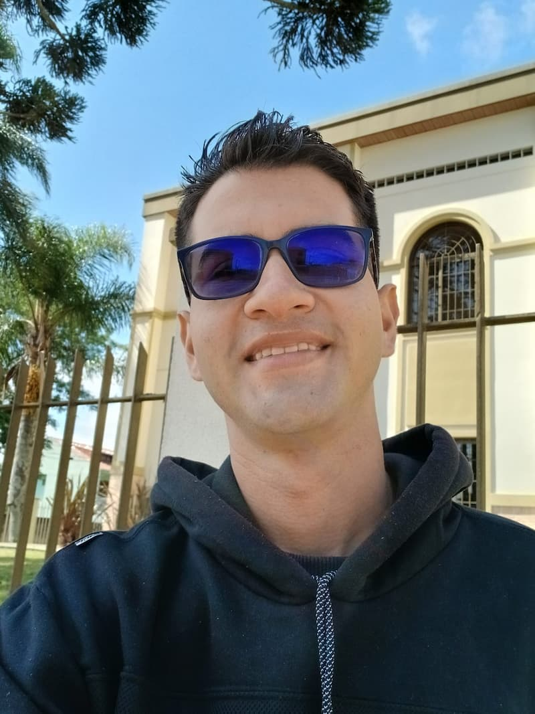

Jonathan Carpio | WDD 130

Olá! Meu nome é Jonathan Rodríguez e sou da Venezuela, mas atualmente moro em Araucária, Paraná, Brasil. Gosto de aprender sobre tecnologia, programação e informática. Também gosto de praticar exercícios físicos e estudar coisas novas. Atualmente trabalho como operador de empilhadeira no Mercado Livre e estudo Desenvolvimento de Software pela BYU-Pathway Worldwide. Meu objetivo é crescer profissionalmente e construir uma carreira na área de tecnologia.